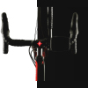
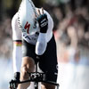

LATEST NEWS
ALIAS - ONE BIKE, TWO PERSONALITIES
 The Alias—part road bike, part triathlon bike—is the perfect choice for these women, who typically don’t want to buy (or store) two bikes for different needs. This bike will be a very attractive option to many first-time triathletes just getting into the sport, due to its versatility and features. We believe the Alias presents a huge opportunity to get in on this fastexpanding market and grow your women’s business through triathlon.
7 Races 7 Medals
 Our enduring tradition of excellence began in 1976 when Mike Sinyard introduced the first product ever under the Specialized banner, the Touring Tire, followed two years later by the Turbo – the first clincher to offer performance equal to tubulars. Almost 40 years later, we’re revolutionizing the Turbo name again. Our enduring tradition of excellence began in 1976 when Mike Sinyard introduced the first product ever under the Specialized banner, the Touring Tire, followed two years later by the Turbo – the first clincher to offer performance equal to tubulars. Almost 40 years later, we’re revolutionizing the Turbo name again.
Specialized Racing Owns the Race of Truth
Through a comprehensive performance testing program, Specialized Racing invests countless hours dialing in fit, gathering data on bikes and equipment, and listening to rider input. All of that effort was validated when two of our premiere teams—the women of Specialized-lululemon and the men of Omega Pharma - Quick Step—successfully defended their titles as Team Time Trial World Champions. Through a comprehensive performance testing program, Specialized Racing invests countless hours dialing in fit, gathering data on bikes and equipment, and listening to rider input. All of that effort was validated when two of our premiere teams—the women of Specialized-lululemon and the men of Omega Pharma - Quick Step—successfully defended their titles as Team Time Trial World Champions.